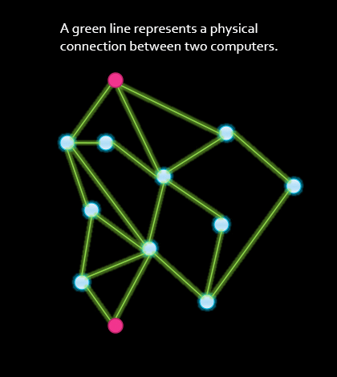

Lesson 3 - Building a Network
At the end of this lesson, you will be able to:
- Find a minimum spanning tree from a network graph.
- Explain why redundancy is important when designing a network.
Building a network
We are going to build a computer network that will let us communicate with multiple people. Considerations for building a network:
- Connecting all people so everyone can communicate with everyone
- Saving money
- Planning for outages - cables break, power failures
In computer science, graphs are used to solve these types of problems. They are not related to “graphs” used in statistics to display data (bar graph or chart).
Sketch the graph in figure 2.3 on paper and find the minimum (shortest path) to connect every node. Remove redundant paths and calculate (count up) the total cost.

Show Solution
Figure 2.4 shows one solution - the cost is 26. Did you find a lower cost? The optimal solution is called a minimum spanning tree.

We found the shortest path graph with the cheapest route to connect all of the nodes. But is this the most efficient way to get from node C to node I? Computer Scientists are still working on solutions to this type of problem.
Suppose all of the paths are built. What is the cheapest (shortest) path from node C to node I? What is the cost?
Show Solution
The cheapest path would be from C to D to E to I with a cost of 3 + 5 + 3 = 11.
If node E fails, what would be the new cheapest (shortest) path?
Show Solution
The cheapest path would be from C to D to F to H to I with a cost of 3 + 6 + 2 + 5 = 16.
Network graph simulator
Open this network graph simulator widget to use an algorithm for finding the minimal spanning tree and the cheapest path between two nodes. Click on the Algorithms menu and select “Search of minimum Spanning Tree”. Is this the same route you discovered?
Now click on “Find shortest path... “ and choose 2 nodes to find the shortest path!
Redundancy
When all the paths were implemented, we created a redundant network. There are multiple pathways among its physical connections to create redundancy. Even if one pathway is unavailable, there is still another way to transmit a message from sender to receiver.
Look what happens in the animation in figure 2.5 when a lightning bolt strikes one of the nodes. There are many reasons a node can fail, such as power failure, chip burnout, etc. The other thing that can happen is that the nodes can all be fine, but the green lines linking the nodes, which represent connections, could fail (e.g., a cable could be cut or disconnected, either accidentally or on purpose).

In the next lesson, we will learn about routers, the computers that move the information through the network.